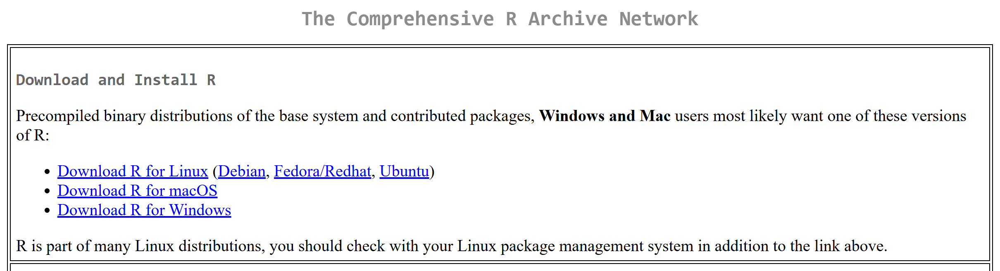
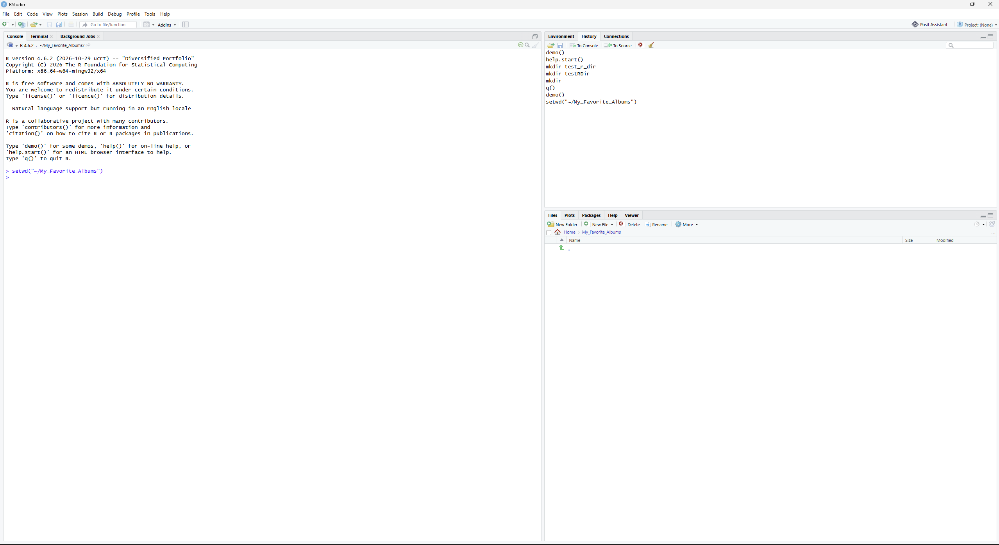

Setting up RStudio and R
Overview
This guide if for users who need to install Rstudio, R, or the required packages needed to run My Favorite Album. If you already have one of these categories installed you can skip that section.
prerequisites
- An internet connection
- Permission to install software
Installing R
- Open the R project install page .
- Select a location for install. Select the one closest to you for quickest install.
- Select Download for <your OS>
-
Follow the installation wizard and wait for the installer to finish
- make take a few minutes

Installing RStudio
- Open the RStudio Desktop download page .
- Select Download installer
-
Run the downloaded installer and follow the installation wizard
- may take a few minutes
-
Launch RStudio. Confirm that the RStudio window opens. The main window
should look something like below.

RStudio's main window after a successful installation.
Installing Required Packages
My Favorite Albums uses R packages to create its interface, process album data, and display visualizations. Install the packages before trying to run the application.
- Open RStudio.
- Find the Console panel. It is usually located in the lower-left area of the RStudio window.
-
Copy the following command, paste it into the Console, and press
Enter:
install.packages(c( "shiny", "dplyr", "ggplot2", "plotly" )) - Wait while R downloads and installs the packages. This may take a few minutes.
- Check the Console for errors. When installation finishes, the Console prompt should return and you should be able to enter another command.